Contenido
El proyecto
Llega lo importante: en equipo, vais a diseñar y fabricar una pieza útil para el centro. Hoy elegís qué pieza, con qué material y cómo la vais a fabricar, y empezáis a diseñarla.
1. Formad el equipo
Equipos de 3 o 4. Cada persona tiene un papel, y los papeles rotan para que todo el mundo diseñe y fabrique:
| Papel | Qué hace |
|---|---|
| Diseño | Modela en Tinkercad. |
| Fabricación | Prepara herramientas y materiales y fabrica. |
| Documentación | Mantiene al día la ficha técnica y las fotos. |
| Seguridad y material | Revisa sujeciones y normas y recoge. |
Cread una carpeta compartida del equipo en Google Drive, con vuestra cuenta del centro, y compartidla con vuestro profesor. Dentro, cuatro carpetas: 01_disenos, 02_laminado, 03_fotos y 04_ficha_tecnica. Sin nombres de personas en los archivos ni fotos de caras.
2. Encontrad una necesidad
Una buena pieza resuelve un problema real. Contestad:
- ¿Qué problema hay y dónde? ¿Quién lo tiene?
- ¿Cómo se resuelve hoy, y por qué no basta?
- ¿Cada cuánto pasa?
3. Escribid tres requisitos
Un requisito es algo que la pieza tiene que cumplir, y se puede comprobar. «Que quede bonito» no se puede comprobar; «que entren cuatro rotuladores de 15 mm» sí. Separad lo imprescindible de lo que estaría bien.
4. Elegid una pieza del catálogo
Los dibujos son ideas para empezar, no planos: medid el objeto real y ajustad las medidas. Empezad por una pieza básica o media; las de ampliación necesitan más tiempo y permiso de vuestro profesor.
Placa táctil de puerta
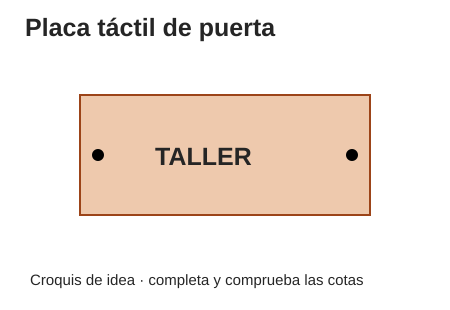
Ampliar croquis (nueva pestaña)
Básica. Placa de 80 × 40 × 4 con texto en relieve de 1,5 mm.
Cómo se prueba: Se lee de lejos y se reconoce el relieve al tacto.
Portacables de mesa
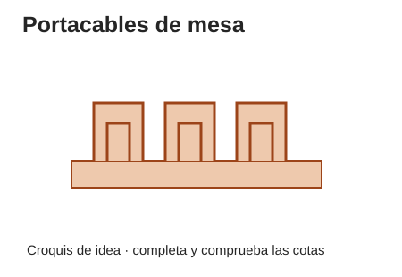
Ampliar croquis (nueva pestaña)
Básica. Base de 80 × 40 con tres canales del ancho de los cables.
Cómo se prueba: Cada cable entra y sale sin dañarse y no se cae.
Soporte de móvil
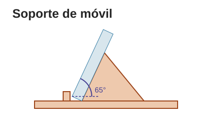
Ampliar croquis (nueva pestaña)
Básica. Base de 80 × 60, ranura de 8 a 12 mm según el grosor real, inclinación de 65°.
Cómo se prueba: Probad primero con una maqueta del mismo tamaño y peso, no con un móvil.
Organizador de rotuladores
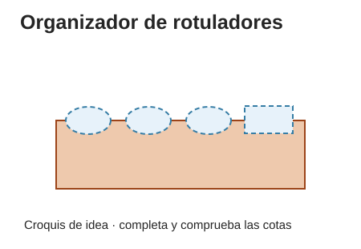
Ampliar croquis (nueva pestaña)
Media. Base de 100 × 80 con cuatro huecos según el diámetro medido.
Cómo se prueba: Se cargan los rotuladores y no vuelca.
Caja de tapones
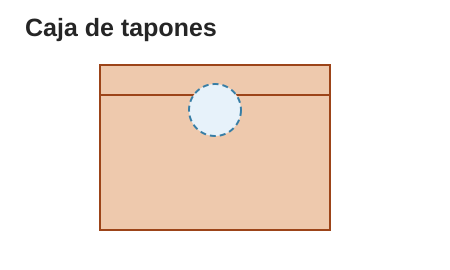
Ampliar croquis (nueva pestaña)
Media. Interior de 100 × 100 × 50 y boca de 35 mm. Mejor con cuerpo de madera y tapa diseñada.
Cómo se prueba: Caben los tapones, pasan por la boca y se vacía fácil.
Adaptador de agarre
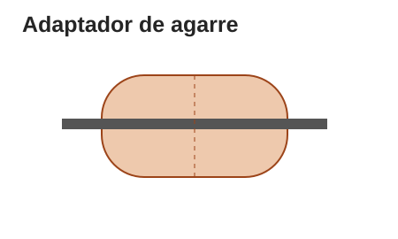
Ampliar croquis (nueva pestaña)
Media. Cilindro de 60 de largo y 25 de diámetro con canal para el utensilio.
Cómo se prueba: Se agarra cómodo y no resbala.
Señalética accesible
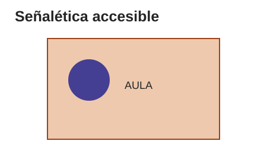
Ampliar croquis (nueva pestaña)
Media. Placa de 100 × 70 con texto y pictograma bien contrastados.
Cómo se prueba: Se entiende a la distancia y altura en que va colocada.
Soporte de tablet plegable
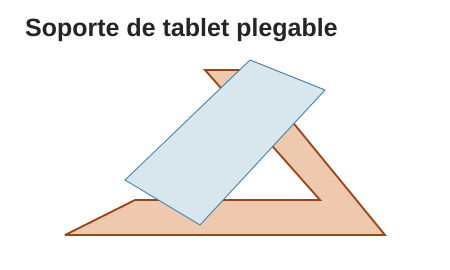
Ampliar croquis (nueva pestaña)
Ampliación. Base de 160 × 120 con bisagra y dos posiciones.
Cómo se prueba: Estable en las dos posiciones, probado con una maqueta.
Dispensador de tornillería
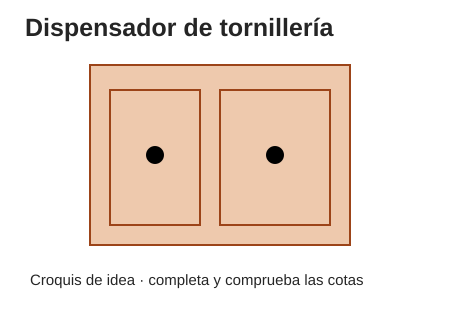
Ampliar croquis (nueva pestaña)
Ampliación. Cuerpo de 120 × 80 × 60 con dos cajones.
Cómo se prueba: Los cajones se abren cargados sin atascarse.
Atril de lectura
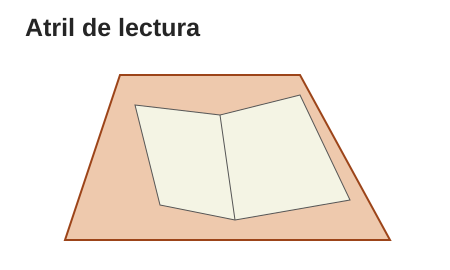
Ampliar croquis (nueva pestaña)
Ampliación. Base de 200 × 150 de contrachapado, respaldo y tope.
Cómo se prueba: Sostiene un libro abierto y se pliega sin pillar los dedos.
Gancho de mochila
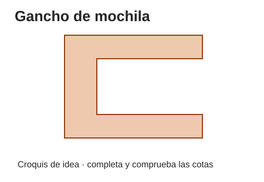
Ampliar croquis (nueva pestaña)
Ampliación. Gancho en C de 50 × 45,5 y 10 de grosor para un tablero de 25 mm.
Cómo se prueba: Prueba de carga hasta 5 kg, siempre montada y dirigida por vuestro profesor.
Brazo articulado para móvil
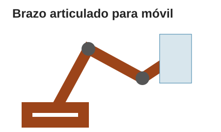
Ampliar croquis (nueva pestaña)
Ampliación. Dos brazos de 100 con tornillos M4.
Cómo se prueba: Probado con un objeto del mismo peso que un móvil, nunca con uno de verdad.
5. Elegid cómo se va a fabricar
Hay dos caminos. Decididlo con vuestro profesor, según el turno de impresora y el material que haya:
| Impresa | A mano (taller) | |
|---|---|---|
| Qué hacéis | Diseño en Tinkercad, revisión en el laminador y acabado de la pieza cuando llegue. | Diseño en Tinkercad, plantilla a tamaño real, corte, taladro y unión en el taller. |
| Quién imprime | Vuestro profesor, fuera de clase, cuando haya turno. | No hay impresión. |
| Qué guardáis | El STL y una captura del laminado. | La plantilla y fotos de cada paso. |
En los dos caminos el diseño en Tinkercad es igual de importante.
6. Elegid el material

| Material | Ventajas | Cuidado con |
|---|---|---|
| PLA (plástico de la impresora) | Formas complicadas, relieves, piezas pequeñas. | El calor (se ablanda al sol) y los golpes. Las capas son su punto débil. |
| Contrachapado o madera | Piezas planas y resistentes, se puede atornillar y reparar. | El polvo al lijar y las astillas. Hay que cortar a mano. |
| Cartón | Maquetas y piezas ligeras, barato y fácil de cortar. | La humedad. No aguanta peso. |
| Tornillos y tuercas | Uniones que se desmontan y se reparan. | Elegir bien el diámetro y el largo. |
Para decidir entre varios materiales podéis usar una matriz de decisión:
- Tachad los materiales que no cumplen algún requisito imprescindible: esos no compiten.
- Elegid criterios (resistencia, facilidad de fabricar, coste, sostenibilidad…) y dadle a cada uno un peso según lo importante que sea.
- Puntuad cada material del 1 al 5 en cada criterio y multiplicad por el peso.
- Sumad: gana el que más puntos tenga.
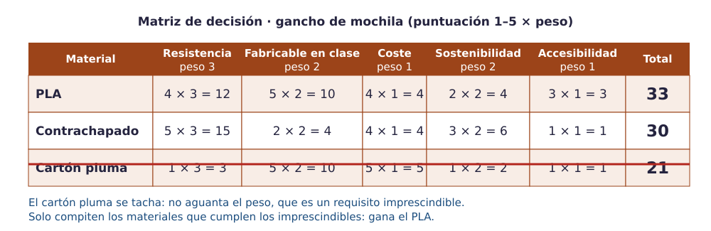
Pruébalo. Cambia los pesos y las puntuaciones y marca qué opciones cumplen los imprescindibles.
Coste: calculadlo con la cantidad. Si la pieza gasta 12 g de PLA y el kilo cuesta 20 €: 12 / 1000 × 20 = 0,24 €.
Sostenibilidad: una pieza que dura, se repara y se desmonta es más sostenible que una que gasta poco material pero se rompe enseguida.
7. Antes de acabar la sesión
- Necesidad, tres requisitos, pieza, camino y material decididos.
- Copia de la ficha técnica del equipo guardada en 04_ficha_tecnica, con el apartado 1 empezado.
- Un boceto con las medidas del objeto real.
- La versión 1 empezada en Tinkercad (diseño pieza_v1): dos personas modelan por turnos y las demás miden y documentan.
Compruébalo
Une cada requisito de una pieza con lo que hay que mirar al elegir el material.
Une cada requisito de una pieza con lo que hay que mirar al elegir el material.
", "showMinimize": false, "itinerary": {"showClue": false, "clueGame": "", "percentageClue": 40, "showCodeAccess": false, "codeAccess": "", "messageCodeAccess": ""}, "cardsGame": [{"url": "", "x": 0, "y": 0, "author": "", "alt": "", "audio": "", "color": "#000000", "backcolor": "#ffffff", "eText": "Tiene%20que%20aguantar%20peso", "urlBk": "", "xBk": 0, "yBk": 0, "authorBk": "", "altBk": "", "audioBk": "", "colorBk": "#000000", "backcolorBk": "#ffffff", "eTextBk": "Una%20prueba%20de%20carga%20con%20el%20profesor"}, {"url": "", "x": 0, "y": 0, "author": "", "alt": "", "audio": "", "color": "#000000", "backcolor": "#ffffff", "eText": "Va%20a%20estar%20al%20sol", "urlBk": "", "xBk": 0, "yBk": 0, "authorBk": "", "altBk": "", "audioBk": "", "colorBk": "#000000", "backcolorBk": "#ffffff", "eTextBk": "Si%20el%20material%20se%20ablanda%20con%20el%20calor"}, {"url": "", "x": 0, "y": 0, "author": "", "alt": "", "audio": "", "color": "#000000", "backcolor": "#ffffff", "eText": "Dos%20piezas%20tienen%20que%20encajar", "urlBk": "", "xBk": 0, "yBk": 0, "authorBk": "", "altBk": "", "audioBk": "", "colorBk": "#000000", "backcolorBk": "#ffffff", "eTextBk": "Las%20medidas%20reales%20y%20la%20holgura"}, {"url": "", "x": 0, "y": 0, "author": "", "alt": "", "audio": "", "color": "#000000", "backcolor": "#ffffff", "eText": "Se%20tiene%20que%20poder%20reparar", "urlBk": "", "xBk": 0, "yBk": 0, "authorBk": "", "altBk": "", "audioBk": "", "colorBk": "#000000", "backcolorBk": "#ffffff", "eTextBk": "Uniones%20con%20tornillos%20que%20se%20desmontan"}, {"url": "", "x": 0, "y": 0, "author": "", "alt": "", "audio": "", "color": "#000000", "backcolor": "#ffffff", "eText": "Tiene%20que%20gastar%20poco%20material", "urlBk": "", "xBk": 0, "yBk": 0, "authorBk": "", "altBk": "", "audioBk": "", "colorBk": "#000000", "backcolorBk": "#ffffff", "eTextBk": "El%20relleno%20y%20el%20tama%C3%B1o%20de%20la%20pieza"}], "isScorm": 0, "textButtonScorm": "Guardar la puntuación", "repeatActivity": true, "weighted": 100, "textAfter": "", "version": 2, "percentajeCards": 100, "type": 2, "showSolution": true, "timeShowSolution": 3, "time": 3, "evaluation": false, "evaluationID": "f96bc37c-5aaf-40e4-af65-a544218a46a6", "id": "idevice-1791888976177-v8cu9j3mu", "msgs": {"msgSubmit": "Enviar", "msgClue": "¡Genial! La pista es:", "msgCodeAccess": "Código de acceso", "msgPlayStart": "Pulsa aquí para jugar", "msgScore": "Puntuación", "msgErrors": "Errores", "msgHits": "Aciertos", "msgMinimize": "Minimizar", "msgMaximize": "Maximizar", "msgFullScreen": "Pantalla Completa", "msgExitFullScreen": "Salir del modo pantalla completa", "msgNoImage": "Pregunta sin imágenes", "msgEndGameScore": "Comience la partida antes de guardar la puntuación.", "msgScoreScorm": "La puntuación no se puede guardar porque esta página no forma parte de un paquete SCORM.", "msgOnlySaveScore": "¡Solo puede guardar la puntuación una vez!", "msgOnlySave": "Solo puede guardar una vez", "msgInformation": "Información", "msgYouScore": "Su puntuación", "msgAuthor": "Autoría", "msgOnlySaveAuto": "Su puntuación se guardará después de cada pregunta. Solo puede jugar una vez.", "msgSaveAuto": "Su puntuación se guardará automáticamente después de cada pregunta.", "msgSeveralScore": "Puede guardar la puntuación tantas veces como quiera", "msgYouLastScore": "La última puntuación guardada es", "msgActityComply": "Ya ha realizado esta actividad.", "msgPlaySeveralTimes": "Puede realizar esta actividad cuantas veces quiera", "msgClose": "Cerrar", "msgAudio": "Audio", "msgNumQuestions": "Número de tarjetas", "msgTryAgain": "Necesitas al menos %s% de respuestas correctas para obtener la información. Inténtalo de nuevo.", "msgEndGameM": "Has completado el juego. Tu puntuación es %s.", "msgUncompletedActivity": "Actividad no completada", "msgSuccessfulActivity": "Actividad superada. Puntuación: %s", "msgUnsuccessfulActivity": "Actividad no superada. Puntuación: %s", "msgTypeGame": "Relaciona", "msgCheck": "Comprobar", "msgRestart": "Reiniciar"}}